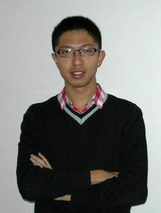

时光荏苒，岁月静默了成长的脚步。回想起大学三年的燃烧岁月，辛苦而又斗志昂扬，忙碌却又充满激情。点点滴滴的积累，始终不渝的坚持，都只因我对人生之路上一切风景，发自内心的爱。
作为一名新生党员，在刚刚入学的时候我就接受了清华的第一课，一周的党员培训让我感受到了清华园红色思想的氛围，更逐渐懂得了作为一名清华生的责任和义务。而不仅如此，李艳老师的讲座更给我留下了深刻的印象，因为她让我学会了该以一种什么样的态度来迎接大学的每一天。那时，我给自己郑重的许下承诺：以最饱满的热情和最积极的态度迎接生活中的每一件事，以一颗平常心和宽容的胸怀看待所有的结果，永不放弃，坚持，做最好的自己。
三年来，我一直以一名优秀共产党员的标准严格要求自己。作为无九二党支部的成员，我一直把自己摆在一个很低的位置，向身边所有的优秀党员们学习，通过倾听和交流让我学会了很多，对于问题的认识更加深刻和全面。我也经常地做自我审视与反思，不断改正自己的缺点和不足，不断充实完善自我。从大二开始我担任无九二党支部的组织委员，并被评为电子工程系优秀共产党员，这学期我在无94班担任党课组长，在无九二党支部担任党支部书记。
学习上，我始终保持着严谨踏实的学习态度，扎实基础，勤于思考，通过三年来不懈地努力和执着的坚持取得了较为优异的成绩。截止到目前，各门课程的平均学分绩94.3分，班级排名第一，年级排名第二，并获得了国家奖学金，一二九奖学金和新加坡科技工程奖学金。在平时的学习中，我更重视的是知识的理解和应用，并有意识的培养自己的独立思考能力和创新意识。我参加过清华大学硬件设计大赛、全国数学建模大赛（获北京市二等奖）、清华大学电子设计大赛、全国大学生物理竞赛等比赛（获国家一等奖），全国大学生数学竞赛（获北京市三等奖）、清华大学数学建模比赛（获一等奖第一名），并参与了清华大学队式程序设计大赛的平台开发和赛会组织工作。在刚刚过去的这个假期中，我和班级的另两位同学，代表清华大学参加了全国数学建模夏令营，尽管不是数学专业没有深厚的理论功底，但我们通过自己一点点的探索和尝试，通过一个多月来日日夜夜的努力，对模型建立和求解算法反反复复的改进，最终展示出了清华学生的能力，也获得了二等奖的成绩。
我具有较强的自学能力和科研热情，参与过清华大学电子工程系系通信实验室“基于博弈论的无线mesh网络智能化研究”SRT项目，清华大学电子工程系系图像实验室的掌纹识别工作，以及清华大学电子工程系系通信实验室的复杂网络聚类研究。今年暑假，我有幸收到了清华-南加州大学暑期交换项目的邀请，在南加州大学Mitra教授的指导下进行无线通信网络的研究。然而遗憾的是，在大使馆的签证时由于专业和导师的敏感性而不幸被审查，由于审查时间过长最终只能无缘这个难得的机会。尽管这对我来说算是一个小小的打击，但我及时调整，很快申请到了一个去百度公司全职实习的机会。至今，我在百度推荐与个性化部门实习已有三个多月的时间，不仅学到了程序设计和大数据处理，也接触到利用数学统计知识进行数据分析和挖掘的方法。在与产品部门合作的同时，我有幸了解了整个产品设计的流程以及产品分析的思路。更重要的是，这段长时间的实习经历让我积累到了很多很多在学校也许难以学到的经验和认识。
我很荣幸成为了无94班的第一任班长。大一一年来用心的付出不仅培养了我各个方面的能力，更让我收获了一份责任，和一份对于班集体的感情。同时无94班也获得了大一学年校甲级团支部和学风优良班称号。三年间，我在班级、系团委、系科协、系学生会、党支部、校团委和一些社团中都曾扮演或扮演着不尽相同的角色。这是一条很独特很有挑战性也很有风险的社工道路。大二一年，我在系团委新生组参与了迎新，新生团队训练营，新生手册的编写和赞助，free之夜的策划，围牛E话的演讲，专业认识期刊的采访等工作；我也是系科协软件部成员，参与队式程序设计大赛平台的开发和赛会的组织工作；同时担任无九年级第二党支部组织委员。步入大三，我担任了电子系学生会生活学习部副部长，参与组织了旧书市，男女生节活动，新生舞会等活动；并继续担任无九年级第二党支部组织委员。如今，我在电子系无九年级第二党支部担任党支部书记，在校团委网络电视台做台长，同时担任礼仪队外联部部长。不同的组织，不同的环境，让我收获了更多的经验和能力，也培养了更多的责任。
我一直认为，大学本科是一个最好的积累的阶段，没有人会确切的知道自己曾经的哪一份经历会在将来的某一天会有用武之地。因此，在刚刚步入大学之时，我就给自己树立了明确的目标，努力培养自己各个方面的能力，向着具备综合素质的复合型人才不断接近。三年以来，我一直执着勇敢的向着这个目标努力。在集体活动和社会工作之余，我也积极参加志愿工作和实践活动，提升自己的服务意识和奉献精神。作为哈三中支队中的一位核心成员，参与了在全部的三次活动的组织工作，并分别做了主题为高中学习经验，清华精神和清华大学生活的演讲，我们支队也被评为一等奖。作为新清华学堂礼仪队的成员，我参与了空政文工团歌剧，北京国际大学生合唱开幕式，大学生职业发展教育国际学术研讨会等多场演出的礼仪服务。作为清华大学国际留学生接待志愿者，我为来自美国伯克利大学的电子系学生Andrew提供生活上的帮助。今年十一，我作为志愿者综合部清华的负责人，参与了中国网球公开赛的志愿服务。
我有意识的提升自己的文体素养。我积极参加体育锻炼，努力保证自己的体育成绩达到优秀，三年来平均分一直保持在90分以上，同时担任了电子工程系羽毛球队的队长。2011年4月我参加了北京国际马拉松邀请赛半程赛并顺利完成。作为电子工程系腰鼓队队长，我参加了电子工程系60周年系庆晚会，清华大学社团文化街闭幕式的表演，更在2012年5月很荣幸的和清华EMBA腰鼓队的学长们一同，参加了中央电视台纪念毛主席延安讲话70周年等晚会的开场舞表演。而校主题团日的朗诵，系歌手大赛的主持，更是让我一次次地迎接挑战，突破自己。
我想，这就是我，一个很普通很平凡却懂得努力懂得进取懂得追梦的清华人。热爱生活赋予我的一切，享受人生路上每一道亮丽的风景，我喜欢拥有一颗诗意的心灵，喜欢创造一个飞翔着的生命。而对待每一件事情，只要自己决定去做，我就会执着的坚持下去，用心的去做到最好。我也一直相信，当一个人真正用心的去做一件事情的时候，他就一定能够成功！